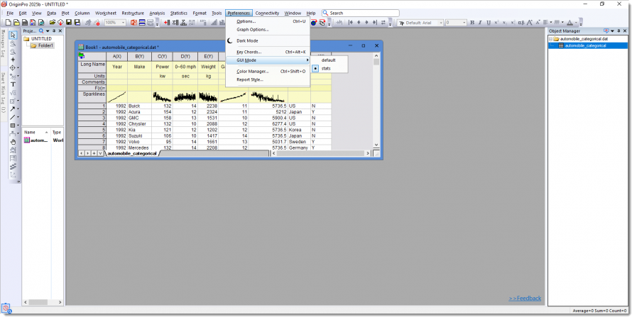

Statistikmodus
Stats-Mode
Was ist der Statistikmodus?
Der Statistikmodus wurde in Origin 2025b eingeführt. Um den Fokus auf die Statistikroutinen zu legen, verbirgt der Statistikmodus die meisten Symbolleistenschaltflächen zum Zeichnen und die erweiterten Analysehilfsmittel, wodurch die Bedienoberfläche übersichtlicher wird und die gewünschten Statistikwerkzeuge einfacher zu finden sind. Außerdem werden gängige Statistik-Apps wie DOE vorinstalliert. 
Da der Statistikmodus nur einige einfache Menüs und Schaltflächen behält, nutzen Sie bitte das Suchfeld, wenn Sie ein Hilfsmittel nicht auf der Bedienoberfläche finden können, um es zu finden und auszuführen.

Wie wird Origin im Statistikmodus geöffnet?
- Sie können Origin im Statistikmodus öffnen, indem Sie bei der Installation von Origin auf der Seite "Origin für Statistik“ die beiden Option Statistik-Apps und Statistikmodus auswählen.

Wenn Sie das getan haben, wird Origin per Standard im Statistikmodus gestartet.
Hinweis: Lesen Sie auf dieser Seite eine Schritt-für-Schritt-Anweisung zur Origin-Installation.
- Wenn Sie Origin installiert haben, ohne die Seite "Origin für Statistik" zu bemerken, können Sie immer über das Menü in den Statistikmodus wechseln:
Wählen Sie im Menü Einstellungen: Modus: Statistik.
Beachten Sie, dass Sie in diesem Fall die gewünschten Statistik-Apps manuell installieren müssen.
Wie wird der Statistikmodus ausgeschaltet?
Sie können immer zur alten Bedienoberfläche zurückkehren:
- Wählen Sie im Menü Einstellungen: Modus: Standard.